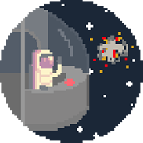

After much effort, you seem to have driven them off. What happened to everyone else anyway, you should get a medal for doing this all by yourself. Anyway, everything’s alright now; the earth is saved, even if you’re drifting far off in this chunk of metal. Best not to think about that.
Start Again